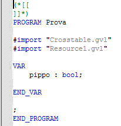

Pour ajouter un nouveau programme, appuyez sur “Programs” avec le bouton droit et sélectionnez “Insert Program”. Ensuite, vous devez écrire le nom que vous voulez donner au programme et le type de langage que vous voulez utiliser.
Dans le programme nouvellement créé doit être inséré l'écriture suivante: #import “Crosstable.gvl” et #import ”Resource1.gvl” (cette opération doit être faite pour tout type de langage que vous choisissez).
